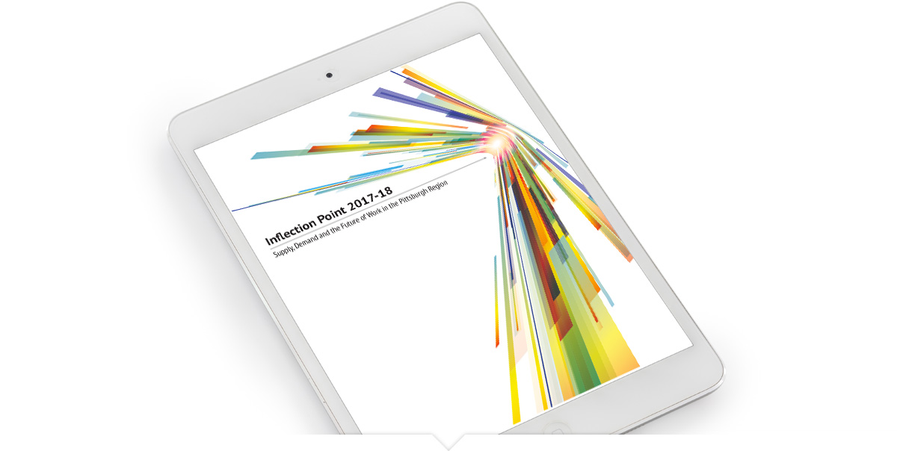
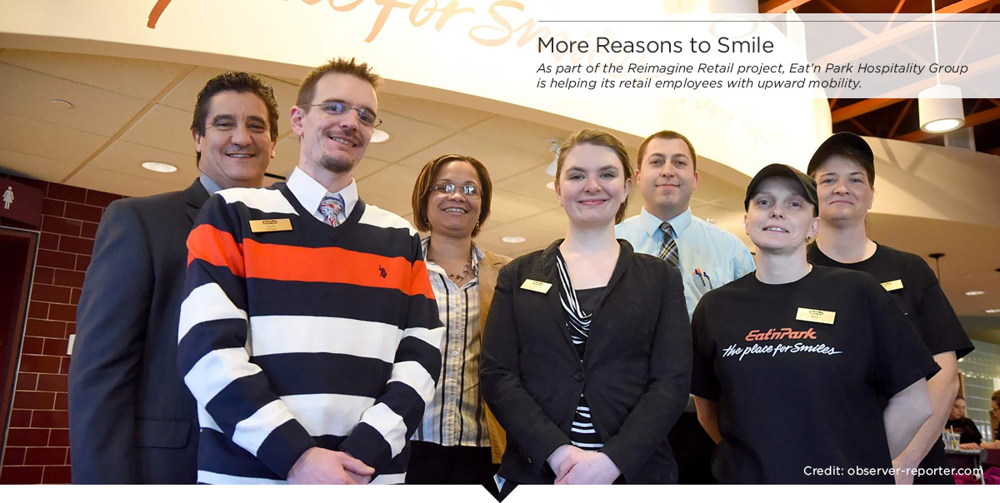
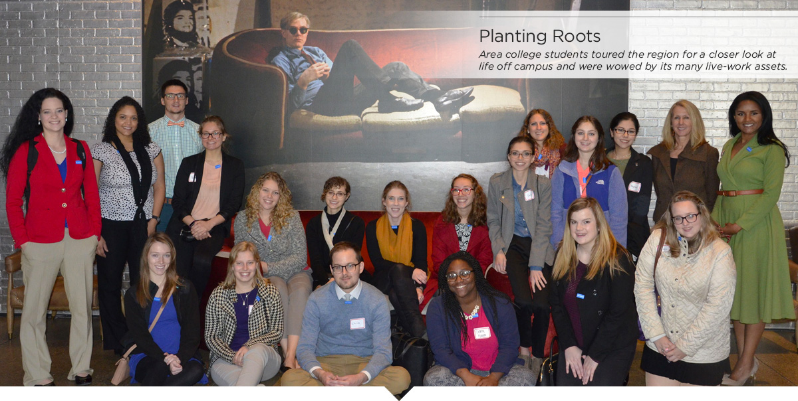

Moving our Workforce Forward
Our workforce strategy focuses on identifying current and future workforce demand and bringing business, education and civic leaders together to ensure the region’s workforce meets that demand.

Analyzing Workforce Demand
Since the release of the landmark Inflection Point report in 2016, the Conference reached out to more than 5,000 business, education and civic leaders to review the findings in detail, focus the region’s attention and motivate action to solve our workforce challenges. Inflection Point 2017-2018 is an update of the original report and provides an in-depth analysis of the occupations and skills that will be in highest demand in the region through 2025, such as fast-emerging clusters like autonomous vehicles. It also spotlights a number of regional employers’ and educators’ best practices to close gaps between worker competencies and the skills regional employers are seeking.

Elevating Talent
Through the Aspen Institute’s Reimagine Retail project, the Conference partnered with Eat'n Park Hospitality Group and the Council for Adult and Experiential Learning to research and develop paths for upward and outward mobility for retail employees. Retail jobs are often first jobs for workers, and places to develop key skills such as customer service, teamwork and grit. Reimagine Retail examined how these skills might be building blocks for upward mobility in retail, or even transferrable to customer service positions in other sectors such as healthcare and financial services.

The Appalachia Partnership Initiative (API) is a more than $20 million initiative that invests in programs that prepare students and the workforce with the education and skills needed to stay and thrive in the tri-state region. API is a public-private partnership guided by the shared visions of the Allegheny Conference, Catalyst Connection, Claude Worthington Benedum Foundation, Chevron and The Grable Foundation, with support from RAND Corporation as the project’s research and analysis partner.

Retaining Talent
Colleges in the Pittsburgh region graduate about 40,000 students every year. About half of them leave after graduation to work in other cities. To retain more of these students, especially those with degrees in high demand in our workforce, the Conference launched a series of “crawls,” showcasing the area’s employers, recreation, eateries and entertainment options, as well as opportunities for leadership. The results are encouraging: Students were wowed by the region’s assets and most said they would now consider Pittsburgh high on their list for their first job. Employers had the opportunity to showcase their companies onsite to top talent for high-demand occupations. Interviews and internships followed these crawls, and we’ll continue them in 2018.
Attracting Talent
ImaginePittsburgh.com continues to be enhanced as the region’s top destination for career exploration. In 2017, we converted Inflection Point to a highly visual, user friendly tool for job seekers on the site, revealing top skills in demand, salary information and growth projections for every major occupation.
Bridging the Gap
Partnering with the Consortium for Public Education, we surveyed 8th and 11th grade students and their teachers in more than 40 regional districts to gauge their levels of career awareness, the skills needed for high-demand jobs, and the people and channels that influence career knowledge and choices. We’ll use the results to help shape digital career tools for students, teachers, guidance counselors and parents, and to design programs that give teachers firsthand experiences in high-demand occupations.